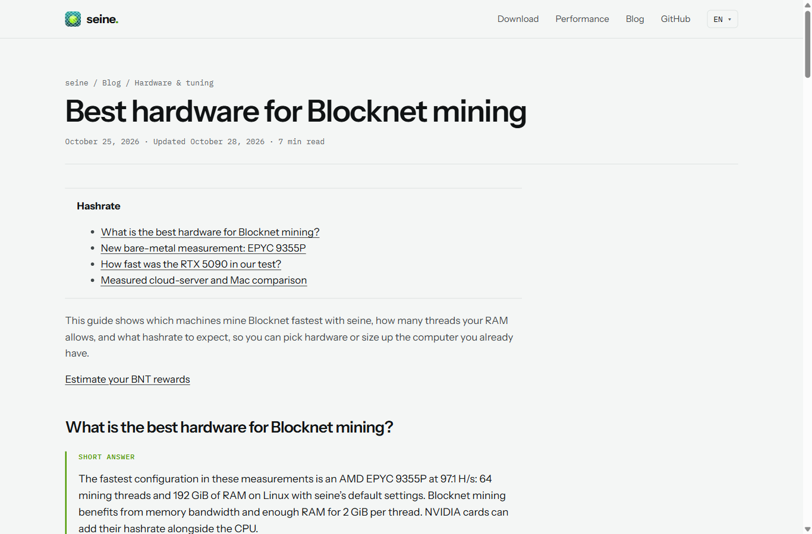
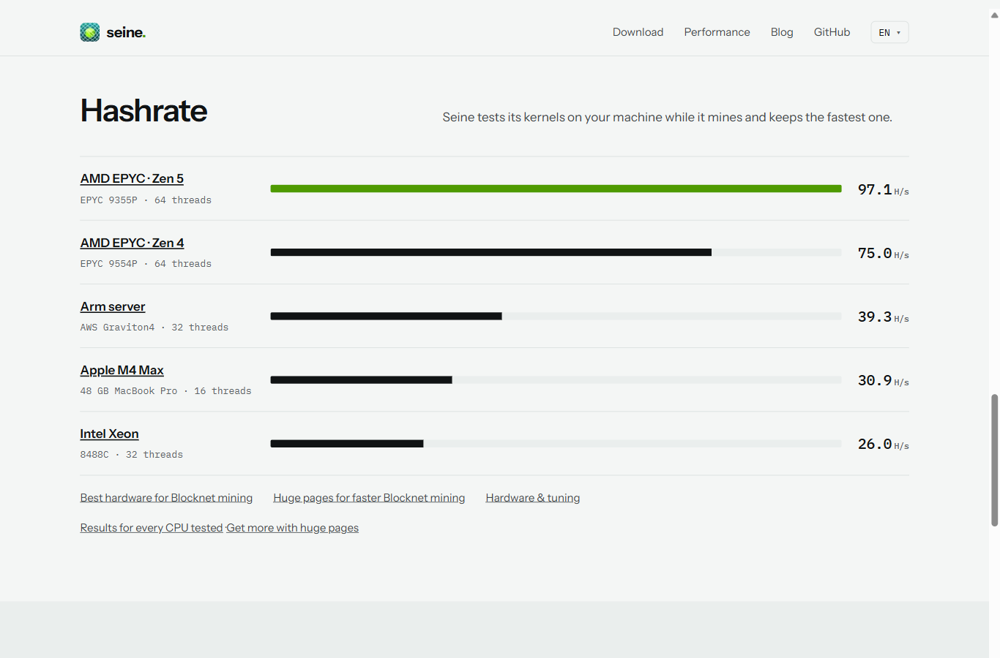
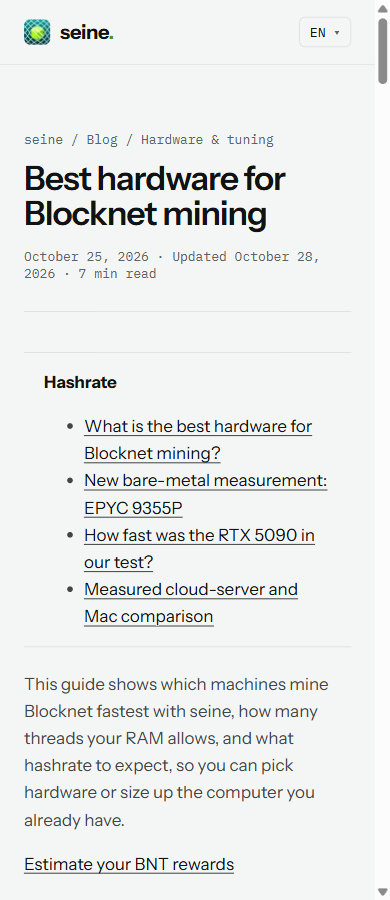
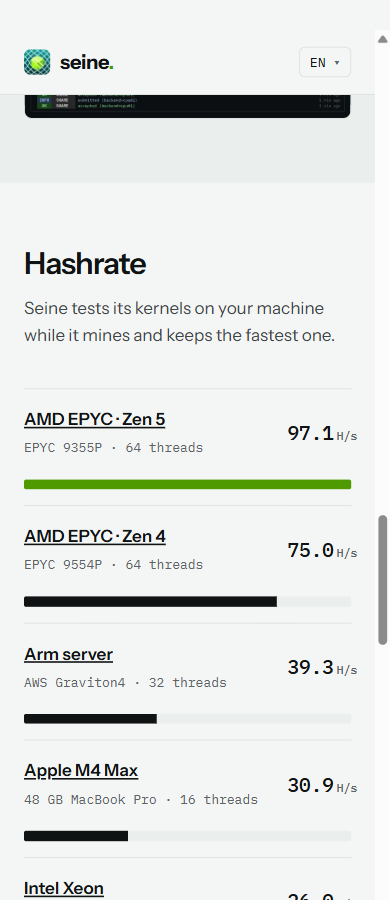

Benchmark chart names link to the existing hardware guide. Its localized section links work without JavaScript. This static feature has no loading, error, empty or disabled state.
Captured through the shared Playwright MCP on October 28, 2026 (EDT). All captures reviewed. Source revisions. Click an image for full resolution.



